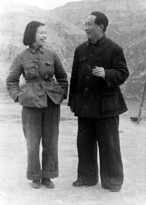
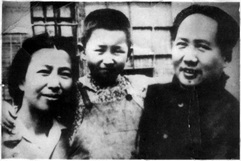
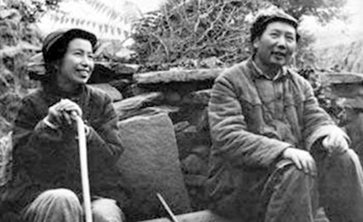
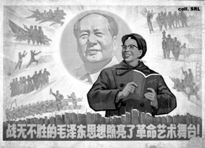
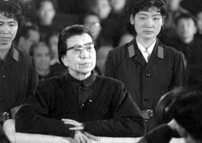

“Ben Mao’nun köpeğiydim.
Kimi ısır dediyse onu ısırdım.”
Jiang Qing
Çin denince akla bu ülkenin Komünist lideri Mao Zedong gelir. Taraftarlarının kısaca ‘Başkan Mao’ dediği, 20. yüzyılın en önemli siyasi figürlerinden olan bu kudretli isim, adeta bugün Çin olarak bildiğimiz ülkeye dair her şeyin mimardır. Yeni bir ulus ve ülke inşa etmeye soyunmuş, kan dökmekten asla çekinmemiştir. Bütün bu hayat macerasında Mao’nun yanında biri vardı daima: Kendisi kadar ihtiraslı ve gözü kara eşi Jian Qing!

Mao çifti, dayattıkları tek tip kıyafet ile
Jiang Qing de Mao gibi, kızılın her tonuna âşık bir devrimciydi. Üç yakın arkadaşıyla birlikte Çin’deki devrimci kitle siyasetinin devam etmesini hedefleyen ünlü Dörtlü Çete’yi kurmuş, Kültür Devrimi sırasında, geleneksel kültüre yapılan saldırıya liderlik etmişti. İdeallerini zorla da olsa hayata geçirmek için çok kan döktü, acımasızlığın şahikası oldu. Ama en belirgin başarısı, bugün bilinen Mao imajını ilmek ilmek örmesiydi. Aslında tüm bunların ışığında “Mao demek biraz da Jiang Qing demektir!” desek isabetsiz olmayacaktır...
Jiang Qing, sürekli içki içen ve karısını döven fakir bir adamın kızı olarak doğdu. Annesi, zor hayat koşullarına direnebilmek için zengin adamlara metreslik yapıyordu. Jiang da annesinin baskısıyla küçük yaşlarda aynı bahtsızlıkla karşılaştı. Doğar doğmaz kucağına düştüğü yoksulluk ve beraberinde yaşadığı karanlık hayat, Jiang’ın geleneksel Çin toplumundan nefret etmesine neden olacaktı. Jiang, erkek egemen toplumda kadına ve çocuklara uygulanan şiddeti hazmedemiyordu. İçinde bulunduğu çetin hayat koşulları, ona ayakta kalmanın yollarını öğretecekti.
Jiang 1914’te doğduğunda Çin kargaşa içindeydi. Cumhuriyetçi Sun Yat-sen, Mançu-Qing hanedanlığını sona erdirmiş, ordunun da gücünü arkasına alarak, Çin’i yerel diktatörlerin hüküm sürdüğü bir kaosa sürüklemişti. Aynı zaman diliminde, ülkede komünist hareket de filizleniyordu.
Jiang’ın gençliğinde, kadınların toplumdaki yeri çok sınırlıydı. Çin tarihinde rastlanan birkaç imparatoriçe, politikaya pek ilgi göstermeyen Jiang’ı, kendi dönemlerinde düzeni değiştirmek için sarf ettikleri çabayla etkilemişti. Onları örnek aldı. Kararlıydı; o da onların devrimci yolunu takip edecekti...
Kaotik bir ortamda yetişti
Jiang’ın kendini tanımaya başladığı yıllarda, hemcinslerine politikanın kapıları kapalı, ama sefahatinkiler açıktı. Giderek yaygınlaşan modern yaşam tarzının geleneksel Çin kültürünü unutturacağından endişe edenlerin sayısı çoktu. Endüstri, bilim ve eğitim alanında Batı’yı model edinen komşuları Japonya’yı da nefretle izliyorlardı. Aynı yıllarda Batı ve Japon sömürgeciliği, ülkeyi tehdit ediyordu.
Çin’in kararsız ve bocalayan gençliğinin kendini ifade ettiği geleneksel vitrinlerden biri de tiyatroydu. Zengin ya da fakir, toplumun her tabakasından insan, geleneksel Çin operalarını izliyordu. Sömürgeci Batı, sinemada etkisini göstermeye başlamıştı. Batının bu parlak yüzüne kayıtsız kalamayan Jiang Qing, 14 yaşına geldiğinde, kendisini sahnelerde buldu. Tiyatro, Jiang’ın hayatını şekillendirebilirdi.
İlerleyen yıllarda bir tüccarla evlense de, evliliğin kendisini sınırladığını anlayınca boşandı. Taşındığı Qingdao, emperyalistlerin at koşturduğu, hızla Batılılaşan bir yerdi. Bu duruma kayıtsız kalamayan Jiang, çocukluğundan bu yana içinde barındırdığı isyancı ateşi yeniden canlandırarak 1921’de Komünist Parti’ye üye oldu. Partinin kurucu üyelerinden biri de ileride Jiang’ın eşi olacak Mao Zedong’du...
Çok geçmeden Jiang, bankacılığın merkezi ve Batı kültürü etkisinin en yoğun görüldüğü yerlerden biri olan Şanghay’a taşındı. Radikal gruplarla bağlantı kurdu. Tiyatrolarda küçük roller alarak çalıştı. Son derece yavaş ilerleyen sahne kariyerine devam ettiği sıralarda, başkent Pekin’e gitti. Şüpheli bir solcu olduğu için tutuklandı. Bu tutukluluğu çok kısa sürdü ancak ileride bir kez daha tutuklanacak ve 8 ay hapiste kalacaktı.
Zaman içerisinde sahne performansını arttıran Jiang, özellikle sol renkler taşıyan rolleri canlandırmadaki başarısıyla, ülkenin tanınan aktrislerinden biri olmuştu.
Sadece filmleri değil, özel hayatı da düşüncelerinden izler taşıyordu. Şanghay’dan ayrılmış ve komünizmin kalelerinden Yenan’a taşınmıştı. Burada, komünizme hizmet eden oyunlarda sivrilerek Mao’nun dikkatini çekmeyi başaracaktı.
Parti yetkilileri, Mao’ya, kitlesi üzerinde daha etkili olabilmesi için misyonuna yakışır bir evlilik yapmasını telkin ediyorlardı. Güzel, komünizme gönül vermiş ve Mao’nun, uluslararası temaslarda yanında bulunmasından gurur duyacağı bir kadın... Adeta Jiang Qing’i tarif ediyorlardı. 1938’e gelindiğinde Jiang, Mao ile evlenmişti. Bir süre sonra Li Ne adını verecekleri kızlarına hamile kalacaktı.

Bay ve Bayan Mao, evliliklerinin ilk yıllarında
Mao nerede Jiang orada
Jiang Qing Yenan’da ideal bir anne ve eş modeline dönüştü. Yabancı heyetler Mao’yu ziyaret ettiklerinde, hizmette kusur etmiyordu.
Ağustos 1945’te Japonya’ya atılan atom bombalarıyla İkinci Dünya Savaşı sona ermiş; Japon tehdidinin ortadan kalkmasıyla, milliyetçi ve komünist Çinliler, tekrar baş başa kalmıştı. İki kesim kozlarını paylaştı ve iç savaştan komünistler galip çıktı. Ekim 1949’ta Mao Zedong, Çin Halk Cumhuriyeti’ni kurdu. Ve her zamanki gibi ‘Başkan Mao’nun yanında eşi Jiang vardı.
Ülkeyi demir bir yumrukla yöneten Mao, gidişattan memnun değildi. Ülke, komünizmi yeteri kadar içten benimseyememişti. Devrimler ağır aksak ilerliyordu. Mao, tüm bunların suçlusunu bulmakta gecikmedi; Çin’in geleneksel kültürü! Yeniyi tesis etmek için eskiye dair ne varsa atılmalı; bu alanda da bir devrim yapılmalıydı! Mao’nun bu düşüncesine ‘sevgili eşi’ Jiang da katılıyordu. Zaten onun da geleneklerle bitmemiş bir hesabı yok değil miydi? Geleneksel Çin kültürüne ait film, müzik, tiyatro ve operaların hâlâ revaçta olması, özellikle Mao’nun sanatçı eşini rahatsız ediyordu. Jiang bu konuyla bizzat ilgilenecekti. İşte böylelikle tarihe ‘Kültür Devrimi’ olarak geçen ve hedefi; eski gelenekleri, alışkanlıkları, kültürü ve düşünce tarzını değiştirmek olan kanlı sürecin de temelleri atılmış oluyordu.

Jiang Qing, Kültür Devrimi’nde aktif rol aldı.
Kültür değişecek, değiştir!
Halkın komünizme teslim olması için son derece acımasız yöntemlere başvuran Mao, ‘Kültür Devrimi’nden önce bir başka politikayı daha hayata geçirmişti: ‘Büyük Atılım’. Bu politika çerçevesinde, köylüler ürünlerini komünlere vermeyi ve komünist üretim anlayışına geçmeyi kabul edene kadar bilinçli olarak aç bırakılmış, en ağır şartlarda çalıştırılarak ezilmişti. Milyonlarca insanın hayatını kaybettiği bu kıyımlar sırasında muhalifler bertaraf edilmişti. Şimdi sıra, ‘halkın bilinçlenmesi önündeki engel’le, yani kültürle ilgilenmeye gelmişti.
Dörtlü Çete işbaşında
Kültür Devrimi’nin devrim kısmıyla Mao ilgilenirken, işin kültür kısmı Jiang Qing’e kalmıştı. Geleneksel sanatları baştan aşağı değiştirmeye soyunan Jiang, resmi ideolojiye uygun olarak, izlenmesi zorunlu oyunlar sahneletmeye başladı. Bu arada kendisine, daha sonradan hep birlikte Dörtlü Çete olarak anılacakları, devrimci yol arkadaşları bulmakta da gecikmedi. Çetenin diğer ayakları, Şanghaylı yenilikçi devrimciler Wang Hongwen ve Zhang Chunqia ile ünlü yazar Yao Wenyuan’dı.

Mao “yeni bir Çin” kurabilmek için tüm muhalifleri susturdu.
Mao’nun yeni bir ulus inşasında kültürün elden geçirilmesine iman etmiş olması, eşi Jiang Qing’i tüm bu sürecin en kritik oyuncusu yapmıştı. Jiang’ın liderliğindeki çete, zamanla kültürel devrimi bir kenara bırakarak, tüm muhalifleri temizlemeye başlayacaktı.
Aydın kesimi hedef alan Kültür Devrimi, ülkedeki tüm muhalif sesleri olabilecek en gaddar şekilde susturdu. Devletin üst kadrolarında oldukları halde ‘komünizmi benimseyememiş kişilerin eğitilmesini’ hedefleyen devrim, ülkedeki hemen her eğitimli ve mevki sahibi insanın aşağılanması, dövülüp işkence görmesi, hatta idam edilmesi operasyonuna dönüşmüştü. Başkanın öngördüğü tek tip kıyafeti (dört cepli, boydan boya düğmeli ceket ve pantolon) giymedikleri, komünist marşlarını ezbere bilmedikleri gibi sıradan bahanelerle insanların işkence görüp katledildikleri bu dönemin sonunda Mao’nun istediği olmuş, komünizm artık insanların zihinlerine tam olarak yerleşmişti! Devrim sırasında on binlerce öğretim görevlisi, devlet adamı ve sanatçı, öğrencilerden devşirilmiş rejim muhafızlarının (Kızıl Muhafızlar) işkencesine uğrayıp hayatını yitirecekti.
Ülkeyi tarumar ettiler
Tüm bu kanlı girişimlerin faturası ağır oldu. Yüz milyonlar ayağa kalkmış, ekonomik ve sosyal kaos artmış, yüzyıllara dayanan kültürel değerler ayaklar altına alınmıştı.
Tüm bu süreçte başrollerden birini oynayan Jiang Qing, devrimin eli sopalı bekçileri olan Kızıl Muhafızlar’ın kontrolünü kazanmış, orduda güçlü bir pozisyon elde etmiş ve her şartta Mao’yu ‘en iyi’ şekilde temsil etmeye çalışmıştı. Tabii ki elindeki sınırsız gücü, eski düşmanlarından teker teker intikam almak için kullanmayı da ihmal etmemişti. Çocukluğundan itibaren hafızasında kötü iz bırakan herkesin kapısına Kızıl Muhafızlar’ı dayamıştı.
Devrimin kanlı çarkları Mao’nun 9 Eylül 1976 ölmesiyle yavaşlamış, Komünist Parti içindeki birçok fraksiyon, başkanın bıraktığı boşluğu doldurmak için harekete geçmişti. En avantajlı konumdaki kişiyse, 40 yıldır kocasının bir dediğini iki etmeyen Jiang Qing’di.
Mao ölmüştü ama Jiang’ın liderliğindeki çetenin durmaya hiç mi hiç niyeti yoktu. Jiang Qing, kendi kontrolündeki kültür araçlarını ve propaganda kanallarını kullanarak, Mao’nun öldüğü günlerde bile düşmanlarına giderek artan bir çılgınlıkla saldırmaya devam etti. Jiang’ın duyduğu önüne geçilmez iktidar ve kan dökme hırsı, Komünist Parti’nin önde gelenlerinin canını sıkmaya başlamıştı. Çetenin, Jiang’ı başa geçirmek için bazı şehirlerde darbe yapmaya kalkışmasıysa, bardağı taşıran damla oldu. İlerleyen yıllarda Çin Komünist Partisi’nin onursal başkanlığına yükselecek olan Deng Xiaoping’in de aralarında bulunduğu yeni oluşum, elini masaya vurunca, Jiang Qing ve çetesi tutuklandı. Oluşum, aslında Mao’nun Kültür Devrimi başta olmak üzere birçok politikasına karşıydı ama sağlığında ona itiraz edememişlerdi. Çeteyi yargılayarak, bir bakıma Mao ve politikalarıyla da hesaplaşmış olacaklardı. Jiang ve arkadaşları, Kültür Devrimi sırasında işledikleri suçlardan yargılandılar. Çetenin diğer üyeleri işbirliği yolları arayıp yumuşasalar da Jiang, masumları katletmek ve hükümeti devirmek suçlarıyla yargılandığı tüm süreç boyunca geri adım atmadı. Üstelik avukat teklifini reddederek, savunmasını kendisi yaptı. Saldırgan ve küstahtı. Kendisine göre, sadece doğru olanı yapmıştı.

Jiang Qing, yargılanması esnasında da küstah tavrını sürdürdü.
Asla geri adım atmadı, pişman olmadı
Çetenin diğer üyelerine ağırlaştırılmış hapis cezaları verilirken, sadece Jiang ölüm cezasına çarptırıldı. Ancak pişman olur da itiraflarda bulunur beklentisiyle, cezası müebbet hapse çevrildi. Fakat Jiang asla geri adım atmaya yanaşmadı. 14 Mayıs 1991’de, gırtlak kanseri olduğu için gözetim altında tutulduğu hastanede intihar ettiği açıklandı. Bir ulusun hafızasını kanla yıkayan devrimin ikinci mimarı da ölmüştü.
Çin toplumundaki bütün güçlü kadınlar gibi, Jiang Qing de halka rağmen halkçılığa soyunanlardandı. Onun yaşadığı toplumda kadınların siyasi bir rolünün olması zordu. Tek yol, sistemin dışına çıkmak, asi olmak ve güçlü erkekleri manipüle etmekti. O da bunu yaptı. Güzel, güçlü, yetenekli ve bilgili bir kadındı. Bu özellikleri, yükselmesini sağlayacak her fırsatta kullandı. Hayatını geleneksel Çin kültürünü ezmek için bir çekiç gibi kullanan Jiang Qing’in mahkemede kendisini savunmak için söylediği şu söz, çocukluğundan itibaren ülkesinde hakim olan erkek egemen kültürü yıkmak için kafa yorduğunu iddia eden (ve aynı zamanda kafa da koparan) bu kadının kişisel dramını tarihe yazdıracaktı.
“Ben Mao’nun köpeğiydim. Kimi ısır dediyse onu ısırdım.”
NOTLAR